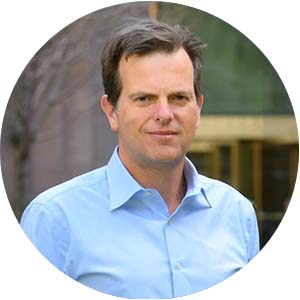
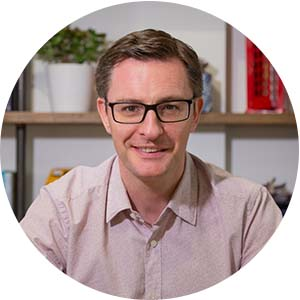
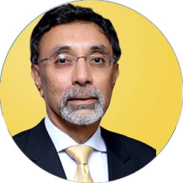
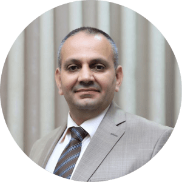

Speakers
PHILIP KOTLER
Father of Modern Marketing
SADIA KIBRIA
Cheif Exceutive Officer Kotler Impact
H.E. SHEIKH HASINA
Prime Minister of Bangladesh
 H.E. JOKO WIDODO
President of Indonesia
H.E. JOKO WIDODO
President of Indonesia
H.E. Dr. ARIF ALVI
President of Pakistan
DAVID AAKER
Father of Modern Branding USA
GAVELLI FABRIZIO
Managing Director Danone
Italy
H.E. OZGUL OZKAN
Deputy Minister Tourism & Culture Turkey
H.E. NADIEM ANWAR
Minister of Education Indonesia
H.E. IMRAN KHAN
ex. Prime Minister Pakistan
H.E. HIDEHIKO YUZAKI
Governor Hiroshima Prefecture Japan
H.E. DIPU MONI
Minister of Education Bangladesh
MAURO PORCINI
Chief Design Officer PepsiCo USA
ROBERTO CROCI
Managing Director for Microsoft for Startups MEA
BASAK KARACA
CEO Coca Cola Turkey
 H.E. MASHIUR RAHMAN
Economic Advisor to Government of Bangladesh
H.E. MASHIUR RAHMAN
Economic Advisor to Government of Bangladesh
RAJA RAJAMANNAR
Global Chief Marketing & Communication Officer Mastercard USA
SADAYOSHI FUJISHIGE
President of JMA & Advisor Lion Corporation Japan
JUSTYNA ORLOWSKA
Head of Government Tech Center Poland
MATHIAS CORMANN
Secretary General OECD France
RAPHAL BRZOSKA
CEO InPost Inc. Poland
H.E. LAMIA KAMEL
Assistant Egypt Minister of Tourism and Antiquities Egypt

STEVE WUNKER
MD New Markets Advisor USA
DR. RON DANIELS
CEO UK Sepsis Trust UK
H.E. SUVIT MAESINCEE
ex. Minister of Higher Education Thailand
KHALED A. TASH
Group CMO Saudi Airlines Saudi Arabia
PROF. RUSSELL BELK
Distinguished Professor York University Canada
HIROSHI IGARASHI
President Dentsu Japan
DICK POUWELS
Chairman Executive Board Hanze University Netherlands
MICHAL SADOWSKI
CEO and Founder Brand24 Poland
CHRISTINE MOORMAN
Fuqua School of Business Duke University USA
ISTVAN KAPITANY
Global EVP Mobility Shell UK
H.E. AK ABDUL MOMIN
Foreign Minister Bangladesh
MIKI KANOH
Executive Officer Corporate Affairs Nestle Japan
MARSHALL GOLDSMITH
Executive Leadership Coach USA
ANN-SOFIE GUNNARSSON
Partner Development Leader IKEA Sweden
MURIEL PENICAUD
OECD Ambassador for France
H.E. ADHAM BABA
Minister of Science & Technology Malaysia
JONATHAN HALL
CEO of Sustainable Transformation Practices Kantar USA
RORY SUTHERLAND
Global Vice Chairman Ogilvy UK
 MASATO AOKI
Corporate Officer Hakuhodo Inc. Japan
MASATO AOKI
Corporate Officer Hakuhodo Inc. Japan
ANDRE ZEFERINO
CEO Work Value Intelligence Portugal
GARETH PRESCH
Founder & CEO World Health Innovation Summit UK
STEFANIA PERTUSI
Vice PresidentTetraPak Italy
DR. MIREI TAKASHIMA CLAREMON
Director of Behavioral Sustainability Global Green USA
HERMANN SIMON
Chairman Simon-Kucher Partners Germany
YASIR AZMAN
CEO GrameenphoneBangladesh
KEIICHI YOSHINO
Operating Officer ESG promotion & Corporate Communication Lotte Co., Ltd.
NALIN BRIAN
CEO Ceylon Biscuits Ltd. Sri Lanka
ANA DUTRA
CEO Korn/Ferry Consulting USA
H.E. SAJEEB AHMED WAZED
ICT Advisor to PM of Bangladesh
YNZO VAN ZANTEN
Chief Evangelist Tony's ChocolonelyNetherlands
GABRIEL CARBONI
Founder 50 Brilliant Italian Companies Italy
MARIANNE VAN KEEP
CSO Verstegen Netherlands
HAKAN BULGURLU
CEO of Arçelik Turkey
TSUNEHIRO FUKUSHIMA
Corporate Executive Officer Transcosmos Inc. Japan
NUNO TEIXEIRA
Partner of Data Tailors Portugal
DR. INGRID MARTIN
California State University USA
GÜVEN BORÇA
Founder Markam Danışmanlık Turkey
DAVID HOOD
Founding Director Edinburgh Institute UK
FERNANDO POMA
Executive Director Real Hotels & Resorts El Salvador
LUIGI SIMONETTI
Founder Commodore 64 Italy
KELLY GOLDSMITH
Chairman of Marketing Vanderbilt Owen School USA
ANGEL BONET
Chairman UnltdSpain Foundation Spain
 JOHN TRAINOR
President Kreativanic Inc. USA
JOHN TRAINOR
President Kreativanic Inc. USA
 ABI OLUKEYE
Founder Smart Girls HQ USA
ABI OLUKEYE
Founder Smart Girls HQ USA
SUNARSO RAIH
CEO BRI Indonesia
GUERINO DELFINO
EVP LIFEGATE Education Italy
PAOLA ALDAZ
CEO & President DDB Group Colombia Portugal
JAN BEYNE
Sustainable Development Specialist at Antwerp Management School Belgium
FARIZ ISMAILZADE
Executive Vice Rector ADA UniversityAzerbaijan
EDYTA RUDAWSKA
University of Szczecin Poland
PROF. ANGELA Y LEE
Northwestern University USA
FIGEN YILIDIRIM
Istanbul Commerce University Turkey
MICHAEL JACOBIDES
London Business School UK
MARIUSZ SOLTANIFAR
Director Kotler Impact Benelux & Poland
AMIR PARACHA
CEO Unilever Pakistan
HOWARD TULLMAN
Serial Entrepreneur USA
THOMAS KOLSTER
Director Goodvertising Denmark
RANA ALDABABNEH
Chief Corporate Communication & Sustainability Officer Orange Jordan
PETER DRUCKER (LATE)
Management Guru(earlier video talk) USA
AL RIES
Positioning Guru(earlier video talk) USA
HENRY MINTZBERG
Management Guru Canada
PROF. ANDRES IBANEZ
Catholica University Chile
DR. DARIKA LATHAPIPAT
President DP University Thailand
MASSIMO MERCATI
Italy
TOKOMO KAWAKAMI
Professor Waseda University Japan
GRZEGORZ MAZUREK
Rector Kozminski University Poland
RICHARD STRAUB
Founder and President Global Peter Drucker Forum
IRFAN WAHAB KHAN
CEO Telenor Pakistan
ENVER YUCEL
Founder & President BUEK & BAU Global Turkey
Fariz T. Jafarov
Director E-Gov Development CenterAzerbaijan
AKAN ABDULA
Founder FutureBright Group of Companies Turkey
DILHAN FERNANDO
Chief Executive Officer Dilmah Tea Sri Lanka
ASGHAR ZAIDI
Vice Chancellor GC University Pakistan
ROBERT WOLCOTT
Founder TWIN Global USA
FEDERICO NICOLINI
CEO Olimaint Italy
LUCAS WANG
Nottingham Business School China
SIRIN KARADENIZ
Vice Chancellor BAC University Turkey
KAMRAN Z. RIZVI
Co-founder Carnelian Pakistan
NICK REPACK
President Grad Resources USA
DR. MAHA MOURAD
American University of Cairo Egypt
ALESSANDRO MAZZÙ
Personal Branding Strategist Italy
DR. ADAM RUDAWSKI
University of Szczecin Poland
GAUTAM MAHAJAN
President Value Foundation India
ANGELO CAPUTI
CEO Banco de Guayaquil Ecuador
DR. AMJAD SAQIB
Founder Akhuwat Foundation Pakistan
MAKIKO ONO
Chief Sustainability Officer Suntory Holdings Japan
 DAVID REIBSTEIN
The Wharton School USA
DAVID REIBSTEIN
The Wharton School USA
VALERIA PIAGGIO
Global Head, Diversity, Equity, and Inclusion Kantar USA
MARC OPRESNIK
Digital Marketing Guru Germany
 WOUTER BAKKER
CEO Good Up Netherlands
WOUTER BAKKER
CEO Good Up Netherlands
DR. CHRIS BROWN
Senior Consultant Market Culture USA
BOOJONG KIM
President Asia Marketing Federation Korea
DENIS ROTHMAN
Artificial Intelligence Guru France
MARIELA PÉREZ CHAVARRÍA
Tecnológico de Monterrey Mexico
OMER SENGULER
CEO Global Brands Turkey
TARIQ QUREISHY
Founder Exponential UAE
HEMANTHA PERERA
Director Marketing Basular Tea Sri Lanka
SUNGHO LEE
University of Seoul Korea
 HERMAWAN KARTAJAYA
Co-Author Marketing 4.0 & Founder Mark Plus Indonesia
HERMAWAN KARTAJAYA
Co-Author Marketing 4.0 & Founder Mark Plus Indonesia
 DR. ABDULHAI
CEO MegaBiz Saudi Arabia
DR. ABDULHAI
CEO MegaBiz Saudi Arabia
BERNA AKYÜZ ÖĞÜT
GM & Board Member LCWaikiki Chain Turkey
HERNANDO RUIZ-JIMENEZ
CMO New York Presbyterian Healthcare USA
DR. ATUL CHAUHAN
CEO AKC Group of companies India
RAUL AMIGO
CEO & President, UMUNTU SAS Colombia
MAHER MEZHER
Founder of Innovators Lebanon
ANA HERNANDEZ LARA
Google Scholar Universität Rovira i Virgili Spain
SALMAN IQBAL
CEO ARY Digital Group Pakistan
 ANNE RUPP
Global Director Corporate Responsibility & Sustainability Simon-Kucher & partners Germany
ANNE RUPP
Global Director Corporate Responsibility & Sustainability Simon-Kucher & partners Germany
HAE-SUN LEE
Chairman Coway Co Ltd. Korea
DMITRY TURUSIN
Business Speaker Russia
DR. ABDULLAH YOUSUF
Chairman NUB Group Bangladesh
MARTHA ROGERS
Founding Partner Peppers & Rogers Group USA
PROF. IGOR MANN
Tedx Speaker & Synergy Business School Russia
DR. DOMINIQUE HANSSENS
UCLA’s Anderson Graduate School of Management USA

DR. DARREN COLEMAN
CEO Wavelength Marketing UK
DR. VINNIE JAUHRI
Director Education Microsoft India
PABLO FERNANDEZ
Founder & CEO Marketing Tech Uruguay
TRAN HOANG
Chairman Vietnam Marketing Association
DR. MAZLIHAM BIN SUUD
President MMU Malaysia
ÖMER TORLAK
Professor İstanbul Ticaret ÜniversitesiTurkey
DR. SAAD ANDALEEB
Penn State University USA
DR. LINDEN BROWN
Consultant MarketCulture Strategies Inc. Australia
DR. V KUMAR
International Marketing Co. USA
PROF. JAGDISH SHETH
Emory University USA
DR. STEFANO BARTOLI
Director Centro Di Terapia Strategica Italy
SANDRA SOTILLO
Founder & CEO of Trust Maker Spain
PROF. SANDRA VANDERMERWE
Imperial College London UK
PROF. VELIMIR SRICA
President at ELITE Croatia
IWAN SETIAWAN
CEO of Marketeers Indonesia
IMAD BALBAKI
American University Beirut Lebanon
EGBERT DOMMERHOLT
Professor at Hanze University of Applied Sciences Netherlands
ELIA GUARDIOLA
CEO Serendipa Spain
SOHAIL NAQVI
Rector University of Central Asia Kyrgyzstan
IRA KAUFMAN
Digital Transformation Strategist USA

ARIFUL ISLAM
Deputy CEO Meezan Bank Pakistan
DATO' SRI IBRAHIM AHMAD
Chairman UTHM Malaysia
İREM SEFA YAYIMLAR
Personal Brand Creator brandyMe Turkey
CARLOS AIRES
CEO Marketing Jazz Spain
MILTON KOTLER (LATE)
Author Why China? A Business Adventure
DR. THOMAS FOSCHT
Karl-Franzens University Graz Austria
PROF. AHMAD TOLBA
American University Cairo Egypt
LUIZ MOUTINHO
Futuristic Marketer Portugal
KARLA MENEZES
Polytechnic Institute of Setúbal & University of Coimbra
DR. AMIR SHAHROKHI
Executive Chairman MANA Iran
ELENA DOMÍNGUEZ
Corporate Intangible Management & Strategic Communication Advisor
DR. SWATI MUJUMDAR
Pro-Chancellor Symbiosis Skills Universities India
CLAUDIO FLORES THOMAS
CLAUDIO FLORES THOMAS
JORGE RUIZ ESCAMILLA
Director of Botmaker México and founding partner at ISDI México
PEPE BECKER
Co Founder, Partner and CCO BeSo by LLYC
 ADRIANA ARISMENDI
Corporate Vicepresident of Marketing and Digital Sales - Bancolombia
ADRIANA ARISMENDI
Corporate Vicepresident of Marketing and Digital Sales - Bancolombia
GABRIEL RICHAU
General Director, IAB México
IVÁN TRUJILLO
Institutional Relationships and Communications Manager, Grupo Argos
EDUARDO DURÓN
Founder at Big, Innovation & Marketing Engineering
NICOLÁS ORTEGA
Head of Marketing, Platzi
ULRICK NOEL
Executive Director at Entrepreneurship Institute at Tec de Monterrey
ENNIO CASTILLO DOPPLER
Partners and Integrations Manager en Doppler
EDUARDO PENICHE
Commercial Director, Dish Media
JUAN DAVID RAMÍREZ C.
Corporate Communications Manager, Postobón
JOSU GARRITZ ALCALÁ
Director of the School of Communications, Universidad Anáhuac México
GISELA SÁNCHEZ
Chief Strategy & Marketing Officer BAC
GERMÁN PÉREZ-DUARTE
Vicepresidente for Latin America, Nielsen
 DANIEL SUÁREZ
Director of Public Affairs, Communicaions and Sustainability, Coca Cola Company
DANIEL SUÁREZ
Director of Public Affairs, Communicaions and Sustainability, Coca Cola Company
 JULIETA LOAIZA
VP of Marketing, Communications and Corporate Affairs, Nestlé México
JULIETA LOAIZA
VP of Marketing, Communications and Corporate Affairs, Nestlé México
SUSANA OLIVA
Founder and CEO, BigFoot
IVÁN MARCHANT
VP at Comscore for México, Perú, Colombia and Central America
LEONARDO RIVERA
VP Custumer Experience Kantar Mexico
JOHNATTAN F. BILANCIERI
SVP Digital Strategy
JACK ADES COHEN
General Manager Capital Digital
PABLO FERNÁNDEZ
CEO Kotler Impact Hispanoamérica
LUIS HERRERA ROJAS
Co-founder and CEO Thrust Co
GISELA SÁNCHEZ
Regional Director of Strategy and Corporate Affairs - BAC
CAMILA ESCOBAR CORREDOR
President, Juan Valdez
JONATAN LOIDI
CEO Set Consulting
ENGEL FONSECA
Founder Neurona Digital
JOSUÉ GONZÁLEZ
Managing Partner at EPA Digital
DR. AMIRA KHATTAK
Associate Chair Department of Marketing Prince Sultan University, Saudi Arabia, KSA
DR. DEMAH ALFAKHRI
Assistant Professor of Marketing, Saudi Arabia, KSA
DR. HIBAH SHATA
Founder and CEO Maharat Learning Center Saudi Arabia, KSA
FADIL ALNASSAR
CEO FranchiseMeSaudi Arabia, KSA

DR. RA’FAT JALLAD
Dean of the Faculty of Economics and Social Sciences An-Najah National University, Palestine
SALLY TAREK EL AKKAD
Marketing Director and Head of E-Commerce in Egypt, Libya and Sudan - Electrolux, Egypt
DR. GHADA ALDREES
Director of Customer Experience Measurement Ministry of Culture Saudi Arabia, KSA
ABDULAZIZ ALSHAMSAN
Executive General Director of Customer Experience at the Ministry of Human Resources and Social Development Saudi Arabia, KSA
DR. INTISAR SOGHAYROUN ELZEIN SOGHAYROUN
General Secretary of the Union of Afro-Asia University Sudan
JOSÉ LUIS PASTOR
CEO Rethink Marketing
DR. OBAID AL ABDALI
Expert on Consumer Dynamics Saudi Arabia, KSA